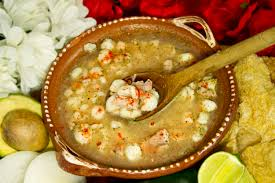

PRECIO $ 150 Una ensalada es un plato frío que mezcla vegetales crudos (hojas verdes, tomate, pepino, zanahoria) con otros ingredientes como frutas, quesos, carnes, huevos o legumbres, y se adereza con aliños como aceite, vinagre, sal, limón, aportando fibra, vitaminas y antioxidantes
PEDIDO
PRECIO $240 La carne roja (res, cerdo, cordero) es nutritiva, fuente de proteínas, hierro (para oxígeno), zinc (inmunidad) y vitaminas B12, clave para el sistema nervioso y la formación de glóbulos rojos.
PEDIDO
PRECIO $ 200 platillo mexicano tradicional a base de granos de maíz cacahuazintle cocidos hasta reventar, carne (pollo, cerdo, etc.).
PEDIDO